REG-2-3
Universal N-way Open 2D/3D Registration
Kurzbeschreibung (Bedienung von REG-2-3)
CAVE: Die Interpretierbarkeit dieses Dokumentes setzt unbedingt eine vorangehende mündliche Einschulung bezüglich REG-2-3 voraus!
Inhalt
1.3 (3) Aktuelle Transformation (Setup Error)
Versionsinformation
|
Version Dokument |
Version REG-2-3 |
Datum |
Autor |
Bemerkung |
|
1.0 |
1.2.3.25 |
30.01.2011 |
Philipp Steininger |
Initiale Version |
|
1.1 |
1.2.4.0 |
07.03.2011 |
Markus Neuner |
Aktualisierung, kleinere Korrekturen, Abbildungen in Zeichnungsobjekte konvertiert für leichtere Wartung |
|
1.2 1.2.1 |
1.2.4.0 |
09.03.2011 14.03.2011 |
Markus Neuner |
Hilfeschaltfläche, Formatierung auf Formatvorlagen umgestellt für HTML-Generierung |
|
1.3 |
1.2.5.1 |
25.05.2011 |
Markus Neuner |
Versionsdialog |
1 Das Kontrollfenster
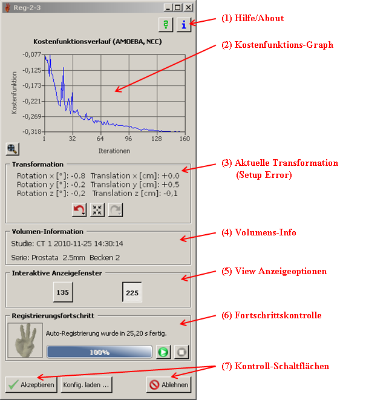
1.1 (1) Hilfe/About
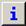 Diese Schaltfläche öffnet einen kleinen „About“-Dialog, also eine Kurzinformation zum Programm REG-2-3. Hauptsächlich dient dieses Fenster der Selbstbeweihräucherung der Autoren, allerdings sind auch nützliche Informationen wie etwa die aktuelle Version des Programms ablesbar.
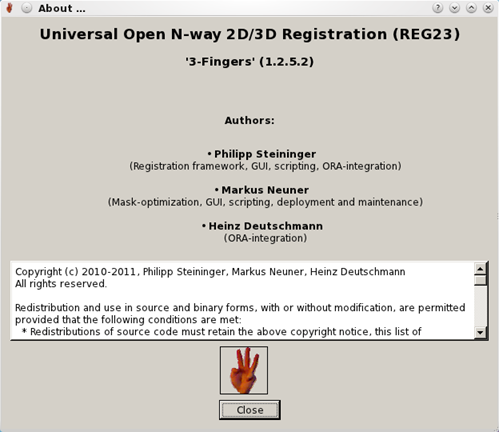
Diese Schaltfläche öffnet einen „Hilfe“-Dialog welcher dieses Dokument anzeigt.
1.2 (2) Kostenfunktions-Graph
Stellt den numerischen Verlauf der Registrierung dar (Kostenfunktionswerte über die Anzahl der Berechnungsiterationen). Sobald der Graph einen flacheren Verlauf erahnen lässt, scheint die Registrierung gegen ein numerisches Optimum zu konvergieren („die Registrierung wird bald fertig“). ABER: Man kann sich keinesfalls ausschließlich auf diese Information stützen, viel wichtiger ist es die Überlagerungsbilder in den View-Anzeigefenstern genau zu beobachten!
In diesem Graphen sind Interaktionen möglich (zoomen, navigieren). Mit der Maus kann ein Zoom-Rahmen aufgezogen werden (linke Maustaste, wie auch im Bild symbolisch abgebildet). Beim Auslassen der Maustaste wird dann automatisch auf diesen Bereich gezoomt.
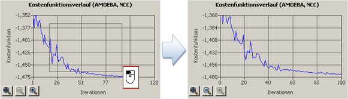
Zudem kann mit den Cursor-Tasten der Tastatur (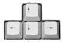) im Graphen navigiert werden (Links-/Rechtsverschiebung, Hinauf-/Hinunterbewegung).
Weiters werden dann automatisch verschiedene Hilfsschaltflächen eingeblendet:
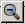 „Herauszoomen“
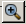 „Hineinzoomen“
„Ganzen Graphen anzeigen“
1.3 (3) Aktuelle Transformation (Setup Error)
Hier wird die momentane Transformation (3 Rotationen um x/y/z Achsen in Grad und 3 Translationen entlang der x/y/z Achsen in cm) dargestellt. Diese Transformation wurde entweder durch eine automatische oder eine manuelle Registrierung hervorgerufen. Sie ist immer aktuell und im geometrischen Sinne als höchstgradig relevant anzusehen.
Undo/Redo für Transformationen
Undo macht die zuletzt angewandte Transformation (entweder durch eine Autoregistrierung oder durch eine manuelle Translation/Rotation) rückgängig. Wenn das Kontrollfenster den Fokus hat, dann kann Undo auch durch das gleichzeitige Drücken von STRG+Z erreicht werden.
Redo stellt die zuletzt (mit Undo) rückgängig gemachte Transformation wieder her. Tastenkombination für Redo ist STRG+Y.
Mit dieser Schaltfläche wird die Initialposition eingenommen (vor Registrierung, also der Planungszustand). Tastenkombination für diese Funktionalität ist STRG+X.
Bleibt man länger mit gedrückter linker Maustaste auf der Undo- oder Redo-Schaltfläche, so erscheint automatisch ein Menü, das die (in der Abbildung unten) rückgängig machbaren Aktionen anzeigt. Durch Auswahl und Klick mit der Maus auf einen dieser Einträge kann sofort zu dieser Transformation gesprungen werden, dadurch sind mehrmalige Undo-/Redo-Klicks vermeidbar. ACHTUNG: Bei exzessiver manueller Registrierung kann diese Liste sehr lang und unübersichtlich werden! Auf das Menü sollte in einem solchen Fall nicht zurückgegriffen werden.
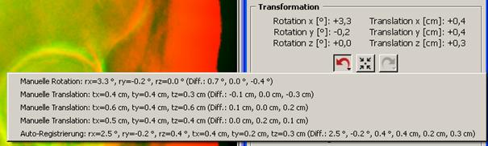
1.4 (4) Volumens-Info
Gibt die Studien- und Serienbezeichnung (inkl. Seriendatum/-zeit) des zur 2D/3D-Registrierung verwendeten CTs wieder. Dies dient der Kontrolle; „Ist das richtige Volumen ausgewählt (meist das Planungs-CT, in anderen Fällen ein spezielles IGRT CT)?“
1.5 (5) View Anzeigeoptionen
Es werden Schaltflächen mit entsprechender Bezeichnung (View-Bezeichnung gemäß der IGRT Views in open-radART) angezeigt, je nachdem wie viele Röntgenbilder (1, 2, 3 …) zur 2D/3D-Registrierung genutzt werden. Ist eine Schaltfläche eingerastet (beispielsweise „Sicht296“ in der Abbildung unten), dann wird der View (das Röntgenbild bzw. Überlagerungsbild) auch in einem eigenen Fenster angezeigt (View Anzeigefenster). Ist die Schaltfläche nicht eingerastet (z.B. „Sicht 26“ in unterer Abbildung) , so wird das Bild zwar im Hintergrund zur Registrierung verwendet, allerdings nicht am Bildschirm angezeigt (was beispielsweise sinnvoll sein kann, wenn man nicht genug Platz am Bildschirm für alle Röntgenbilder hat).

1.6 (6) Fortschrittskontrolle
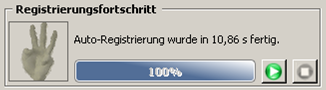
Diese Fläche dient der Anzeige des Fortschritts von verschiedenen laufenden Prozessen (in erster Linie des Autoregistrierungs-Prozesses). Beispielsweise wird der Fortschritt der Initialisierung beim Hochfahren der Applikation angezeigt oder auch der geschätzte Fortschritt während des Auto-Registrierens. Die Prozentzahl wird symbolisch durch die Handanimation unterstützt, die von Null (0%) bis drei Finger (100%) zählt.
Diese Schaltfläche unterbricht den momentan laufenden Prozess. Sie ist z.B. zu betätigen, wenn abzusehen ist, dass die Registrierung absolut fehlschlägt – hier gilt es keine Zeit zu vergeuden, sondern die aktuelle Registrierung abzubrechen, die Registrierung manuell „grob“ zu initialisieren („ungefähr hinschieben“), und dann erneut eine Auto-Registrierung zu starten.
Sobald REG- 2-3 entsprechend initialisiert ist und gerade keine Auto-Registrierung läuft, kann diese Schaltfläche betätigt werden. Sie initiiert eine neue Auto-Registrierung ausgehend von der momentanen Position (Transformation). Beim Start wird diese Schaltfläche im Normalfall automatisch „betätigt“, daher beginnt die Auto-Registrierung ausgehend von der Planungsposition. Findet die Registrierung aber keine angemessene Transformation, dann kann eine grobe manuelle Verschiebung angewendet werden, und anschließend wieder die Auto-Schaltfläche betätigt werden, damit die Auto-Registrierung die genaue Position (inkl. Rotationen) findet.
1.7 (7) Kontrollschaltflächen
Mit der Akzeptieren-Schaltfläche wird die momentane Transformation AKZEPTIERT, d.h. die Applikation wird geschlossen, und die Transformation wird an open-radART übermittelt. Dort wird dann die Transformation auf das ausgewählte Structure Set angewandt, und die Auswirkung ist in gewohnter Form (Silhouetten-Projektion der Strukturen) zu bewundern.
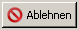 Mit der Ablehnen-Schaltfläche wird die Registrierung global ABGELEHNT, d.h. die Applikation wird geschlossen, und KEINE TRANSFORMATION wird in open-radART angewandt. Die Registrierung muss dann mit anderen Mitteln, beispielsweise der Transformations-Kontrollgruppe in open-radART, bewerkstelligt werden.
Tipp: Wenn ein Fenster den Fokus hat und man hält den Maus-Cursor über eine Schaltfläche, dann erscheint bei den meisten Schaltflächen ein kleiner Hilfetext, der nochmals beschreibt wofür diese Schaltfläche gut ist.
2 View Anzeigefenster
Im Normalfall sind neben dem Kontrollfenster 2 View Anzeigefenster (Überlagerungsfenster von Röntgenbildern und DRRs) am Bildschirm zu sehen. Beispielsweise könnte das so aussehen:
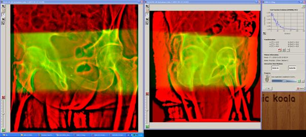
Je nach Anzahl der verwendeten Röntgenbilder variiert natürlich die Anzahl der View Anzeigefenster!
Es ist zu bemerken, dass die Position und Größe aller Fenster und weiters der Sichtbarkeitsstatus der View Anzeigefenster beim Schließen von REG-2-3 gespeichert werden. Beim nächsten Aufruf erscheinen die Fenster daher wieder an derselben Position und in derselben Größe wie bei der letzten Verwendung (Session). Außerdem weisen die einzelnen View Anzeigefenster denselben Sichtbarkeitsstatus (eingerastet oder nicht) auf.
In der Titelzeile eines jeden View Anzeigefensters wird der Name des Views (im Normalfall der Name des zugehörigen open-radART IGRT Views) zusammen mit dem open-radART Akquisitionstyps und der Akquisitionszeit (Datum, Zeit) angezeigt. Die Beachtung von Datum und Zeit ist eine durchaus nützliche Information, da hier auf einem Blick klar ist, ob die verschiedenen Röntgenbilder tatsächlich zusammen gehören! Ist die Zeitdifferenz zwischen den einzelnen Röntgenbildern zu groß, wird dies durch eine entsprechende Benachrichtigung zu Beginn der Registrierung nochmals untermauert!
Ein View Anzeigefenster kann oberflächlich in folgende Zonen unterteilt werden:
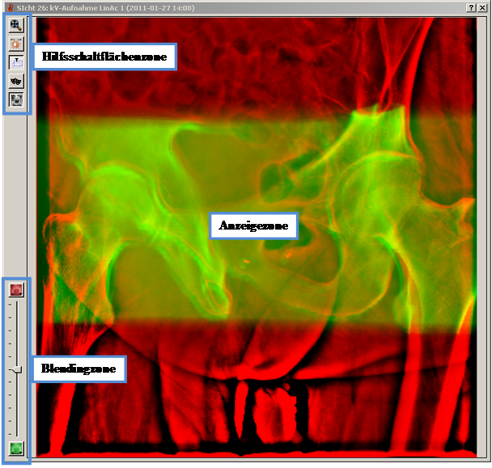
2.1 Anzeigezone
In der Anzeigezone wird primär das zum View gehörende Röntgenbild (in rot) überlagert mit dem DRR (in grün) angezeigt. Dabei wird das DRR durch virtuelle Projektion des Volumens (CT) mit der durch den View inhärent definierten Projektionsgeometrie erzeugt („ein virtuelles Röntgenbild“). Bei der Registrierung wird das CT virtuell im Raum verschoben (translatiert) und rotiert, dadurch ändert sich folglich das Erscheinungsbild des DRRs. Gelbe (gelbliche) Regionen markieren Bereiche, die eine intensitätsmäßig gute Übereinstimmung zwischen DRR und Röntgenbild aufweisen. Kurz gesagt ist das Ziel der Registrierung von einem visuellen Gesichtspunkt wie folgt: möglichst gelbe Regionen erreichen, wobei die sichtbaren Kanten (Knochen) zwischen Röntgenbild und DRR gut übereinstimmen müssen – natürlich in allen Views!
Die Anzeigezone hängt eng mit der Blendingzone zusammen.
2.2 Blendingzone
Der Blending-Schieber ermöglicht das Überlagerungsverhältnis zwischen DRR und Röntgenbild zu verändern. Röntgenbild und DRR können im Rot/Grün-Bild also unterschiedlich stark gewichtet werden. Bewegt man den Schieber in Richtung rote Schaltfläche, so wird das Röntgenbild stärker gewichtet, z.B.:
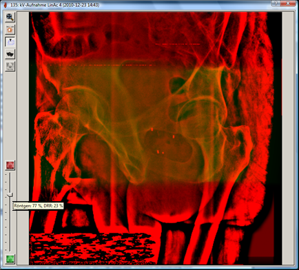
Bewegt man den Schieber jedoch in Richtung grüne Schaltfläche, so wird das DRR stärker gewichtet, also z.B.:

Durch einen Doppelklick mit der linken Maustaste auf den Schieber, erreicht man eine 50:50-Mischung (Initialzustand).
Der Schieber ist ein unerwartet intuitives Tool, denn durch stetiges Hin-und-Her-Schieben desselben gewinnt der Betrachter ein außergewöhnlich gutes Gefühl für das Ausmaß der Registrierungsgüte. Verschiebungen und v.a. auch Rotationsfehler sind auf diese Weise in Sekundenschnelle aufzuspüren („man hat den Eindruck da bewegt sich etwas“).
 Durch den Klick auf die
Röntgenbild-Schaltfläche wird ausschließlich das Röntgenbild angezeigt
(Schieber ganz nach oben).
Durch den Klick auf die
Röntgenbild-Schaltfläche wird ausschließlich das Röntgenbild angezeigt
(Schieber ganz nach oben).
Durch den Klick auf die DRR-Schaltfläche wird ausschließlich das DRR angezeigt (Schieber ganz nach unten).
Beide Schaltflächen verfügen über Menüs (erscheinen bei längerem Betätigen der Schaltflächen mit der linken Maustaste), die in engem Zusammenhang mit der Fensterung stehen (siehe unten, 2.5).
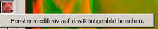 
2.3 Hilfsschaltflächen-Zone
Die Hilfsschaltflächen stehen in engem Zusammenhang mit Aktionen auf die Anzeigezone, wie nachfolgend im Detail beschrieben. Hier sollen die Funktionalitäten der Hilfsschaltflächen kurz angerissen werden.
Zeigt das ganze Rot/Grün-Überlagerungsbild mit optimaler (maximaler) Größe im View Anzeigefenster an. Besonders hilfreich bei großem Zoom. Durch Drücken der Taste R kann diese Aktion ebenfalls hervorgerufen werden.
Spreizt die Anzeige des Röntgenbildes, des DRRs oder des Überlagerungsbildes auf die gesamte Intensitätsbreite auf – Fensterung! Dies ist unten genauer beschrieben.
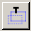 Wenn diese Schaltfläche eingerastet ist, dann werden während der manuellen Registrierung Hilfslinien angezeigt, die das Ausmaß der Translation/Rotation darstellen. Mehr dazu weiter unten. Ist die Schaltfläche nicht eingerastet, dann werden keine Hilfslinien angezeigt.
Wenn diese Schaltfläche eingerastet ist, dann werden die Konturen der Registrierungsmaske in blau eingeblendet. Die Registrierungsmaske ist eine aus 3D Strukturen automatisch generierte Region, die Pixel beinhaltet, die für die Registrierung herangezogen werden sollen. Pixel außerhalb werden ignoriert. Dies ist beispielsweise sinnvoll, um von unterschiedlichen Femurstellungen in CT und Röntgenbild unabhängig zu werden. Die Maske definiert dadurch natürlich auch die Bereiche, auf die sich der Beobachter (User) visuell konzentrieren soll!

 Diese Schaltfläche dient
der Aktivierung einer lokalen Kontrastverbesserung des Röntgenbildes (Unsharp
Masking). Dies ist beispielsweise interessant für native Röntgenbilder, die
nahezu unmöglich so zu fenstern sind (siehe Abbildung unten links), um das
gesamte Becken mit gutem Kontrast darzustellen (siehe Abbildung unten rechts
mit aktivierter Kontrastverbesserungsschaltfläche).
Diese Schaltfläche dient
der Aktivierung einer lokalen Kontrastverbesserung des Röntgenbildes (Unsharp
Masking). Dies ist beispielsweise interessant für native Röntgenbilder, die
nahezu unmöglich so zu fenstern sind (siehe Abbildung unten links), um das
gesamte Becken mit gutem Kontrast darzustellen (siehe Abbildung unten rechts
mit aktivierter Kontrastverbesserungsschaltfläche).
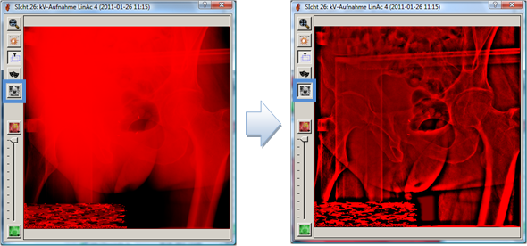
Die für die Registrierung essentiellen Kanten sind also besser sichtbar. Diese Schaltfläche wirkt sich NICHT auf die Auto-Registrierung aus; egal ob diese Schaltfläche eingerastet ist oder nicht, intern wird die von open-radART konfigurierte Repräsentationsform des Röntgenbildes benutzt. Die Schaltfläche bezieht sich wirklich ausschließlich auf die Visualisierung!
2.4 Zoomen und Pannen
In jedem View Anzeigefenster kann das Rot/Grün-Bild vergrößert/verkleinert (zoomen) und verschoben (pannen) werden.
2.4.1 ZOOMEN
Bemerkung: Alle folgenden Möglichkeiten zum Zoom setzen voraus, dass das betreffende View Anzeigefenster den Fokus hat (z.B. einfach auf die Titelleiste des Fensters klicken)!
·
Methode 1: Mausscrollrad nach vor
bewegen (=Hineinzoomen), Mausrad nach hinten bewegen
(=Hinauszoomen).
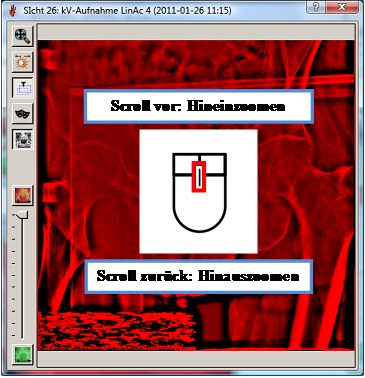
·
Methode 2: Taste „+“ für Hineinzoomen, Taste
„-“ für Hinauszoomen.
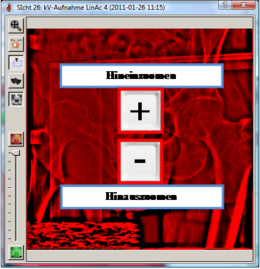
·
Methode 3: Mit der gedrückten rechten
Maustaste in der Anzeigezone nach oben fahren (=Hineinzoomen), mit
der gedrückten rechten Maustaste in der Anzeigezone nach unten
fahren (=Hinauszoomen). Während dieser Bewegung ändert sich der Mauscursor, und
nimmt die Gestalt einer Lupe an.
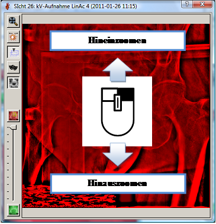
Weiters wurde bereits oben die im Zusammenhang stehende -Schaltfläche (oder Taste R) der Hilfsschaltflächenzone erwähnt.
2.4.2 PANNEN
Um das Überlagerungsbild zu verschieben (pannen) muss die linke Maustaste + ALT-Taste (bitte nicht AltGr, sondern Alt!) gedrückt werden und dann entsprechend nach links, rechts, oben oder unten bewegt werden. Während dieser Bewegung ändert sich der Mauscursor, und nimmt die Gestalt einer Hand an.
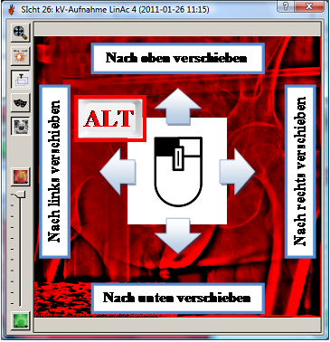
2.5 Fensterung
Die Fensterung (Einstellung von Kontrast und Helligkeit bzw. von „Window“ und „Level“) kann sich entweder auf das Rot/Grün-Bild, das Röntgenbild oder das DRR beziehen. Auf welches Bild sich die Fensterung bezieht wird durch folgende Regeln bestimmt:
· steht der Schieber in der Blendingzone nicht ganz oben (100% Röntgenbild) und nicht ganz unten (100% DRR), und ist keines der Menüs – wie gleich beschrieben – aktiviert, dann bezieht sich die Fensterung auf das Rot/Grün-Bild (also auf beide Bilder, das Röntgenbild und das DRR gleichzeitig)
· steht der Schieber ganz oben (100% Röntgenbild), dann bezieht sich die Fensterung auf das Röntgenbild (es hätte keinen Sinn auf das DRR oder das Rot/Grün-Bild zu fenstern, wenn nur das Röntgenbild angezeigt wird!)
· steht der Schieber ganz unten (100% DRR), dann bezieht sich die Fensterung auf das DRR (es hätte keinen Sinn auf das Röntgenbild oder das Rot/Grün-Bild zu fenstern, wenn nur das DRR angezeigt wird!)
·
steht der Schieber auf einer beliebigen Position
(nur nicht ganz unten), dann kann auf der roten Röntgenbild-Schaltfläche der
Blendingzone mit einem langen linken Mausklick ein Menü angezeigt werden; wird
dieses betätigt (Haken bei „Fenstern exklusiv auf Röntgenbild beziehen“
gesetzt), dann wird das Fenstern ausschließlich auf das Röntgenbild bezogen
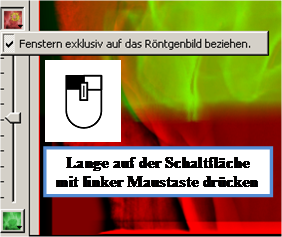
· Durch nochmalige Betätigung des Menüs (kein Haken) kann die Fensterung wieder auf das Rot/Grün-Bild bezogen werden.
· Das gleiche gilt für die grüne DRR-Schaltfläche („Fenstern exklusiv auf as DRR beziehen“)
Bemerkung: Sobald das Fenstern auf das
Röntgenbild bezogen ist, wird dies durch ein „Sonnensymbol“ auf der Röntgenbildschaltfläche
visualisiert  . Sobald das Fenstern auf
das DRR bezogen ist, wird dies durch ein Symbol auf der DRR-Schaltfläche
visualisiert
. Sobald das Fenstern auf
das DRR bezogen ist, wird dies durch ein Symbol auf der DRR-Schaltfläche
visualisiert  .
.
2.5.1 FENSTERUNG:
Grundsätzlich wird die Fensterung durch Drücken der mittleren Maustaste hervorgerufen. Dadurch nimmt der Maus-Cursor die Gestalt einer Sonne an.
· Bewegt man die Maus bei gedrückter mittlerer Maustaste nach links, so wird der Kontrast verringert (bzw. Window vergrößert).
· Bewegt man die Maus bei gedrückter mittlerer Maustaste nach rechts, so wird der Kontrast erhöht (bzw. Window verringert).
· Bewegt man die Maus bei gedrückter mittlerer Maustaste nach oben, so wird die Helligkeit erhöht (Level verringert).
·
Bewegt man die Maus bei gedrückter mittlerer
Maustaste nach unten, so wird die Helligkeit verringert (Level
erhöht).
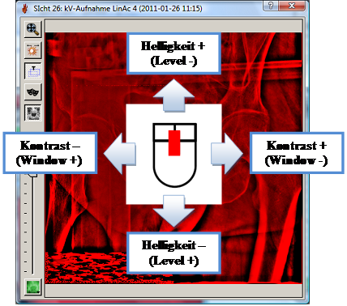
2.6 Manuelle Registrierung
Zusätzlich zur automatischen Registrierung (Schaltfläche „Auto“ bzw. automatisch beim Starten von REG-2-3), steht eine manuelle Registrierung zur Verfügung. Hier kann das CT interaktiv im 3D Raum bewegt werden um eine optimale Überlagerung der DRRs mit den Röntgenbildern (in allen View Anzeigefenstern gleichzeitig!) zu erreichen.
Grundsätzlich kann die manuelle Registrierung in jedem View Anzeigefenster durchgeführt werden. Dabei steht jeweils die Blickrichtung des Views im Vordergrund. Es kann also eine Verschiebung (Translation) perpendikular zur Blickrichtung vollzogen werden oder eine Rotation um die Blickrichtungsachse. Diese Transformationen werden dann zurück in den 3D Raum gerechnet, auf das CT angewandt, und die DRRs in allen View Anzeigefenstern aktualisiert – die Auswirkung der Transformation ist somit in allen sichtbaren Views visualisiert! Dabei werden die DRRs in Echtzeit nachgerechnet – es handelt sich hier nicht um die Verschiebung von 2D Bildern!
Die manuelle Registrierung kann von den View Anzeigefenstern auf verschiedene Arten bewerkstelligt werden:
Bemerkung: In den folgenden Bildern ist die Schaltfläche eingerastet, die Transformations-Hilfslinien (in blau) werden angezeigt. Wenn dies nicht gewünscht ist, dann muss diese Schaltfläche ausgerastet werden!
·
Maus-Verschiebung:
Mit gedrückter linker Maustaste und entsprechender Mausbewegung, innerhalb
des blauen Rahmens, kann das DRR (und dadurch das CT im 3D Raum)
perpendikular zur Blickrichtung verschoben werden. Dabei nimmt der Maus-Cursor
diese Gestalt an.
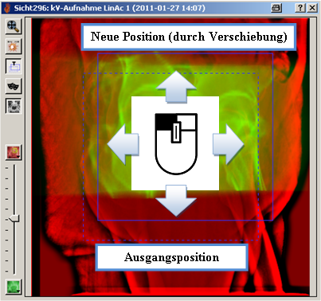
Bei den Hilfslinien stellt der gestrichelte Rahmen die Ausgangsposition dar,
und der volle Rahmen stellt die neue – durch die Transformation resultierende –
Position dar.
· Tasten-basierte Verschiebung: Hat ein View Anzeige den Fokus, so kann die Verschiebung perpendikular zur Blickrichtung auch durch das Drücken der Cursor-Tasten auf der Tastatur erreicht werden . Pro Tastendruck erfolgt eine Translation um 1 mm (bezogen auf das Isozentrum) in die jeweilige Richtung. Drückt man zusätzlich gleichzeitig SHIFT (Großschreibe-Taste) wird, statt jeweils 1 mm, um 5 mm verschoben!
·
Maus-Rotation:
Mit gedrückter linker Maustaste und entsprechender Mausbewegung, außerhalb
des blauen Rahmens, kann das DRR (und dadurch das CT im 3D Raum)
perpendikular zur Blickrichtung rotiert werden. Dabei nimmt der Maus-Cursor
diese Gestalt 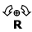 an.
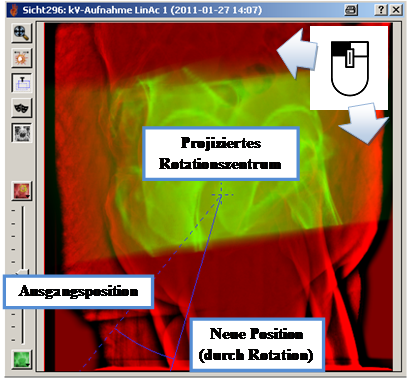
Die gestrichelte Hilfslinie zeigt hierbei den Ausgangswinkel an, die volle
Hilfslinie zeigt den neuen Winkel an. Das gestrichelte Kreuz zeigt das
projizierte Rotationszentrum an.
· Tasten-basierte Rotation: Hat ein View Anzeige den Fokus, so kann die Rotation perpendikular zur Blickrichtung um das projizierte Rotationszentrum auch durch das Drücken der links-/rechts-Cursor-Tasten auf der Tastatur 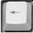 bei gleichzeitigem Drücken der STRG-Taste (Steuerung) erreicht werden. Pro Tastendruck wird eine Rotation um 1 ° (um das Rotationszentrum) in die jeweilige Richtung erreicht. Drückt man zusätzlich gleichzeitig SHIFT (Großschreibe-Taste) wird, statt jeweils um 1 °, um 5 ° rotiert!
Insgesamt ist die manuelle Registrierung ein nützliches Werkzeug für die 2D/3D-Registrierung. Es ist jedoch zu bemerken, dass die Freiheitsgrade der Transformation (Translationen und Rotation) inhärent durch die View (Blick-)Richtungen der Röntgenbilder bestimmt sind. Dies macht zwar Sinn (sonst wäre es auch nicht so implementiert), kann aber bei nur einem Röntgenbild oder mehreren Bildern in ungünstigen Winkelkonstellationen Flexibilität missen lassen.